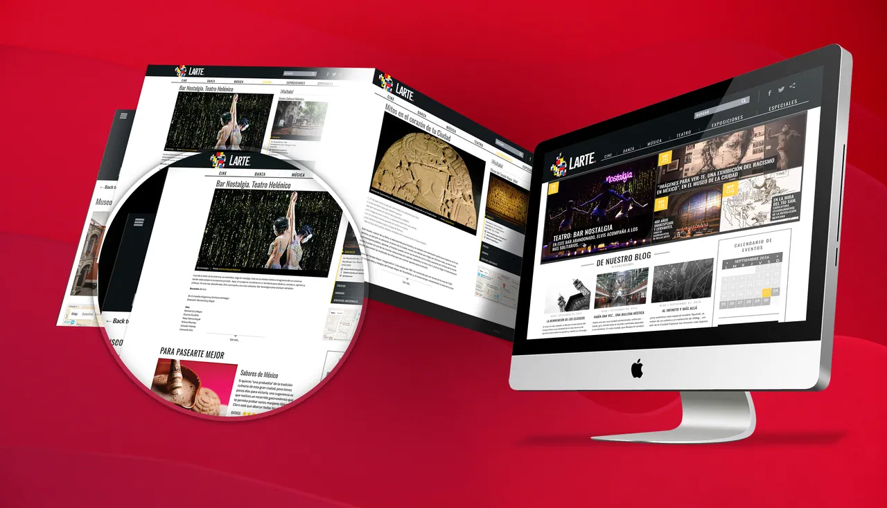

Brand Identity
Exploring Visual Identities
Every identity begins with the client and the people they want to reach. From there I build a logo, a color palette and a typographic voice that can travel from a business card to a website.
This page brings together a variety of identity work, developed in close collaboration with each client: a cultural guide for Mexico City, a psychologist’s practice and a diving brand.
- Role
- Art Director & Designer; Graphic Designer
- Clients
- Larte; Sugey Urbina Psicología; BuceO2
- Project
- Visual Identity
Larte
A Cultural City
Logo, Visual Identity & Website Design · 2015
Larte was imagined as a guide to the theater, concerts, exhibitions and film of Mexico City. Working directly with the client, I developed the identity and designed the site.
The logo is a silhouette of Mexico City re-imagined through the grid and primary colors of Mondrian: a city built from the colors of its culture.
- Role
- Art Director & Designer
- Client
- Larte
- Year
- 2015
Sugey Urbina
Professional Identity
Visual Identity & Stationery · 2015
For clinical psychologist Sugey Urbina, I designed a warm, human identity. The symbol is a tree of colored dots: neural connections, and the Greek psi of psychology.
A magenta and soft blue palette carries it across stationery, flyers and her website. Her practice still uses the identity today.
- Role
- Graphic Designer
- Client
- Sugey Urbina, Professional Brand Development
- Year
- 2015
BuceO2
Dive In
Logo, Name & Collateral · 2015
BuceO2 is a diving brand. Its name plays on the Spanish buceo, to dive, and O2, oxygen. I helped develop the name and the identity, then carried it to a shirt, banner, flyer and website.
- Role
- Graphic Designer
- Client
- BuceO2
- Year
- 2015